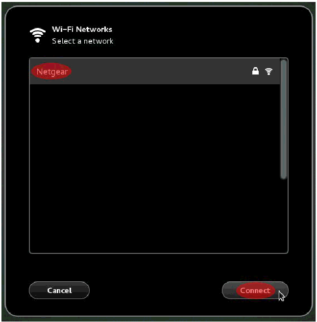
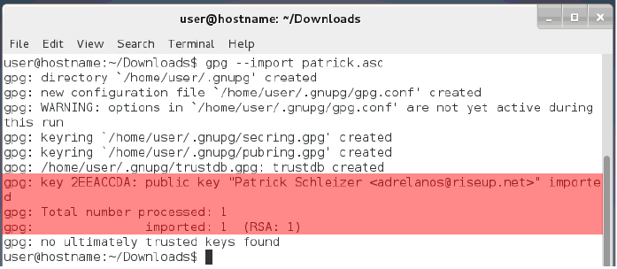
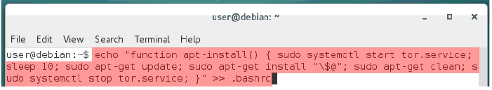
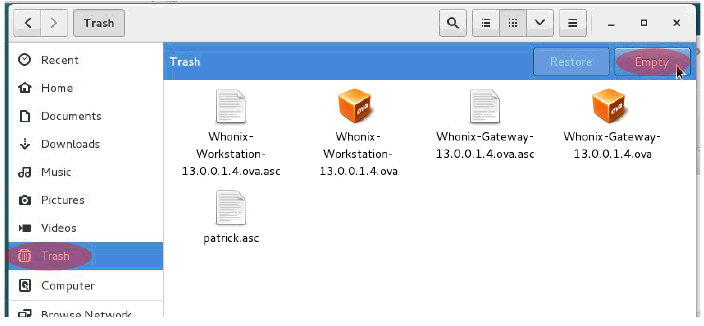
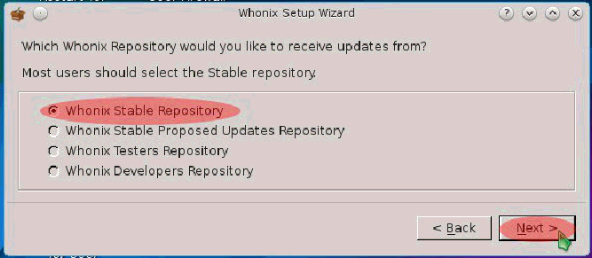

راهکارهای پایانی دبیان و نصب هونیکس
تقریبن کارتان با نصب دبیان تمام شده است! حال فقط چند گام دیگر باقی مانده است که باید انجام دهید. اگر میخواهید میتوانید استراحتی کنید و این فصل را زمانی دیگر شروع کنید. اما اگرآماده ادامه هستید بیایید شروع کنیم.
۱. ابتدا بیایید ارتباط اینترنت تان را راه اندازی کنیم. مناسبتر آن است که برای موارد امنیتی از ارتباط اینترنت سیمی استفاده کنید. اگر اتصال سیمیتان را وصل کرده باشید مدیر شبکه دبیان به صورت اتوماتیک آن را شناسایی کرده و به اینترنت وصل می شود. اگر ترجیح میدهید که از اتصال سیمی استفاده کنید به گام ۹ بروید.
اگر وای فایتان را در طول تنظیمات اولیه دبیان در فصل یک بخش – د تنظیم کردهاید به گام ۴ بروید.
اگر یک اتصال بی سیم نساخته اید در گوشه بالا راست دسکتاپ تان جایی که شبیکه؛بلندگو و باتری و فِلِش پایین دارد کلیک کنید سپس بر روی Wi-Fi کلیک کرده و بر روی Select network کلیک کنید.
۲. در پنجره ای که ظاهر می شود بر روی اتصال Wi-Fi کلیک کرده و بر روی connect کلیک کنید.

۳. زمانی که از شما پسورد خواسته شد پسوردتان را تایپ کرده و بر روی Connect کلیک کنید.
نکته: اگر روتر شما (همون مودمتون) برای استفاده از پروتکل احراز هویت WEP تنظیم شده است باید آن را فوراً به WPA2 تغییر دهید. WEP در حد بسیار بدی نا امن است و میتواند در کمتر از ۱ دقیقه کرک شود.
۴. حال شما باید تنظیمات ارتباط وای فایتان را ویرایش کنید. در بالا گوشه سمت راست دسکتاپتان جایی که شبکه؛بلندگو؛باتری و آیکون فِلِش پایین قرار دارد کلیک کنید سپس بر روی Wi-Fi کلیک کرده و سپس بر روی Wi-Fi Settings کلیک کنید.
۵. زمانی که پنجره تنظیمات شبکه ظاهر شد بر روی آیکونی شبیه چرخ دنده که کنار پروفایل ارتباط وای فایتان قرار دارد کلیک کنید.
۶. زمانی که پنجره ظاهر شد بر روی Identity از منوی سمت چپ کلیک کنید. سپس تیک گزینه connect automatically را که در طرف کلیدهای پایین پنجره است بردارید.
نکته: اگر بعدن ارتباط Wi-Fi جدیدی اضافه کنید. خیلی بد است که اینها را برای هر ارتباط جدید تکرار کنید تا از ساختن یک اثر انگشت بالقوه دوری جویید. برای مثال اگر لپ تاپ شما تلاش کرد تا به چندین روتر Wi-Fi؛ بخصوص اتوماتیک وار وصل شود این کار میتواند یک اثر انگشت یکتا درست کند که ماشین های دیگر (کامپیوترها از هر نوعی) میتوانند آن را شنود کنند . و این کار میتواند برای یافتن مکانتان در یک زمان خاص مورد استفاده قرار گیرد.
۷. سپس بر روی سربرگ IPv6 کلیک کنید که در سمت چپ پنجره قرار دارد. اگر شما قصد استفاده از پروتکل IPv6 ندارید؛ کلید لغزنده IPv6 را که در بالا و گوشه راست پنجره قرار دارد بر روی OFF قرار داده و بر روی کلید Apply کلیک کنید.
اگر میخواهید از پروتکل IPv6 استفاده کنید بر روی کلید Apply بدون آنکه چیزی را تغییر دهید کلیک کنید.
۸. زمانی که به پنجره مدیریت شبکه باز گشتید بر روی آیکون X که در بخش بالا سمت راست قرار دارد کلیک کنید تا پنجره بسته شود.(همون ضربدر) برای آنکه به شبکه وایرلس تان حالا و در آینده وصل شوید به سادگی همان توضیحات گام های ۱ - ۲ از این فصل را دنبال کنید.
۹. زمانی که به دسکتاپ دبیان بازگشتید بر روی Applications که در گوشه بالا سمت چپ قرار دارد کلیک کنید سپس Utilities را انتخاب کرده و به پایین رفته و Terminal را انتخاب کنید.
۱۰. تایپ کنید sudo -i تا دسترسی root را بدست بیاورید. از شما پسوردتان خواسته میشود این همان پسوردیست که شما برای user در گام ۱۳ از فصل ۱ بخش – د وارد کرده اید. پسوردتان را وارد کرده و Enter کنید.
نکته: هر زمانی که از این دستور استفاده می کنید تا زمانی که از نشست خارج شوید دسترسی کامل سطح ادمین رادارید. پس زمانی که در نشستتان خواستید از این دستور استفاده کنید بسیار محتاط باشید. تغییراتی که ایجاد میکنید میتواند باعث تخریب ماندگار شود .
نکته: اگر تمایل به Copy و Paste کردن دستورات در ترمینال سیستم عامل دبیان در طول این آموزش را دارید. هر چیزی را که از این آموزش کپی کردید با دستور CTRL+SHIFT+V در ترمینال Paste کنید.
۱۱. در ادامه ساعت دبیان تان را تنظیم کنید تا توسط (Universal Time Code (UTC اجرا شود.تایپ کنید dpkg-reconfigure tzdata و Enter کنید.
۱۲. در پنجره ای که ظاهر میشود کلید جهت نمای سمت پایین را فشار دهید تا به پایین لیست بروید تا زمانی که None of the above هایلایت شود سپس Enter کنید.
۱۳. در صفحه بعد اگر UTC به صورت پیشفرض هایلایت نشده بود از کلید های جهت نمای بالا یا پایین استفاده کنید تا UTC هایلایت شده سپس Enter کنید گزینه های به ترتیب حروف الفبا هستند.
۱۴. حالا نوبت نصب فایروال بر روی دبیان است این کار لایه محافظتی بیشتری در مقابل نفوذ های بالقوه خارجی اضافه میکند .Ufw یک نرمافزار است که رُل های (نقش های) فایروال را برای سیستم عاملتان تنظیم می کند. در ترمینال تایپ کنید apt-get install ufw و Enter کنید.
۱۵. حالا شما باید تنظیمات رول های فایروالتان را ویرایش کنید تا انواع ترافیک شبکه از نوع ICMP را خاموش کنید. این کار نباید هیچ گونه مشکلی برایتان ایجاد کند و سطح حملات بالقوه تان را محدود خواهد کرد. تایپ کنید nano /etc/ufw/before.rules سپس Enter کنید.
۱۶. در صفحه بعد کلیدهای LEFT-CTRL+W (کنترل سمت چپ) را بفشارید تا جستجوگر متن باز شود. سپس تایپ کنید icmp و Enter کنید.
۱۷. نشانگر موس شما به مکانی که شامل خط ok icmp codes# میشود خواهد رفت درادامه این خط ۵ خط دیگر وجود دارد که نیاز است تغییر کنند که به رنگ قرمز در تصویر زیر هایلایت شده است.
سمبل “#” را در ابتدای هر پنج خط تایپ کنید تا کامنت شوند نتیجه باید به صورت تصویر زیر شود.
۱۸. حالا فایل را ذخیره کرده و از Nano خارج شوید. کلیدهای LEFT-CTRL+X را فشار داده و و زمانی که به شما پیام ذخیره بافر تغییر داده شده نشان داده شد تایپ کنید Y .
سپس زمانی که از شما خواسته شد که یک نام برای فایل انتخاب کنید فقط Enter کنید.
۱۹. در ادامه فایروال را روشن کنید در خط قرمان تایپ کنید ufw enable و Enter کنید.UFW باید به شما پیام فعال بودن را نشان دهد حال بعد از هر راه اندازی دوباره ای (Reboot)؛ UFW فعال می شود.
۲۰. حالا نوبت نصب Tor و apt-transport-tor است. Tor یک سرویس پراکسی قوی ناشناس کننده است. Apt-transport-tor این اطمینان را میدهد که تمام آپدیت ها ی بعدی دبیان یا نرم افزارهای نصب شده توسط سرویس مخفی Tor سازمان دبیان پیادهسازی شود. این کار؛ شما را از اینکه چه سیستم عاملی استفاده میکنید از اسنوپر ها (شنود کننده ها) مخفی خواهد کرد.
۲۱. در ادامه نیاز است که دبیان را تنظیم کنید تا نصب آپدیت ها و نرمافزار ها را از طریق سرویس مخفی Tor انجام دهد. دستور زیر را تایپ کرده و Enter کنید.
nano /etc/apt/sources.list
۲۲. تصویر زیر نمایان می گردد.
کلید Control و K را همزمان با هم نگه دارید تا زمانی که صفحه شما خالی شده و مانند تصویر زیر در بیاید.
۲۳. در ادامه خطوط زیر را در پنجره بالا کپی کنید.
deb tor+http://vwakviie2ienjx6t.onion/debian jessie main contrib
deb tor+http://vwakviie2ienjx6t.onion/debian jessie-updates main contrib
deb tor+http://sgvtcaew4bxjd7ln.onion/debian-security jessie/updates main contrib
۲۴. حال فایل را ذخیره کرده و از Nano خارج شوید. LEFT-CTRL+X را فشرده و زمانی که از شما سؤال شد که آیا می خواهید بافر تغییر داده شده ذخیره شود Y را تایپ کنید.
سپس زمانی که از شما خواسته شد تا نامی انتخاب کنید فقط Enter کنید.
۲۵. دو گام بعد زمانسنج TCP را خاموش میکند. این کار نفوذگران را از دسترسی به مکانیسم های دارای پتانسیل برای شناساییتان باز می دارد بخصوص هر زمانی که از نرم افزاری در هونیکس استفاده کنید که نیاز به هاست (میزبان) Onion بر روی کامپبیوترتان دارد(به عنوان مثال برخی از برنامه چت)(اگه فهمیدنش سخته خیلی سخت نگیرین خیلی مهم نیست مکانیزمشو بقهمید).
دستور زیر را تایپ کرده و Enter کنید.
echo "net.ipv4.tcp_timestamps = 0" > /etc/sysctl.d/tcp_timestamps.conf
۲۶. حال فایلی که بتازگی ساختهاید را بارگذاری کنید تا برای زمان سنج پروتکل TCP در هاست دبیان قوانین را تنظیم کنید. دستور زیر را تایپ کرده و Enter کنید.
sysctl -p /etc/sysctl.d/tcp_timestamps.conf
۲۷. گام انتخابی: برخی مردم درباره انواع نشت های پروتکل IPv6 نگرانند. مگر آنکه برای اتصال نیاز به پروتکل IPv6 داشته باشید در غیراین صورت میتوانید غیر فعالش کنید. اگر میخواهید IPv6 را خاموش کنید دستور زیر را تابیپ کرده و Enter کنید. اگر نمیخواهید پروتکال IPv6 را غیر فعال کنید به گام ۳۱ بروید.
nano /etc/default/grub

۲۸. گام انتخابی: مکان نما را به خط GRUB_CMDLINE_LINUX_DEFAULT ببرید بعد؛ از این علامت " تا = را مارک کنید (با موس از دابل کتیشن(") تا مساویو(=) هایلایتش کنید)و به جای آن تایپ کنید ipv6.disable=1 در نتیجه تصویر باید به چیزی شبیه به تصویر زیر شبیه شود.
۲۹. گام انتخابی: حال فایل را ذخیره کرده و از Nano خارج شوید. LEFT-CTRL+X را فشرده و زمانی که از شما سؤال شد که آیا می خواهید بافر تغییر داده شده ذخیره شود Y را تایپ کنید.
سپس زمانی که از شما خواسته شد تا نامی انتخاب کنید فقط Enter کنید.
۳۰. گام انتخابی: سپس باید گراب خود را آپدیت کنید تا متغیر غیر فعال شدن پروتکل Ipv6 در تنظیمات منوی گراب ذخیره شود. پس تایپ کنید update-grub و Enter کنید.
بعد از آنکه کامپیوترتان را ری یوت کردید پروتکل IPv6 از این به بعد غیرفعال خواهد بود.
۳۱. حال میتوانید از محیط root خارج شوید. تایپ کنید exit وenter کنید.
۳۲. در ادامه دستور cd Downloads را تایپ کنید تا دایرکتوری (همون فلدر) فعلیتان به دایرکتوری Downloads تغییر کند در ادامه تمام فایل های هونیکستان را در این مکان دانلود خواهید کرد.
۳۳. حالا باید ماشین مجازی Whonix-Gateway را دانلود کنید. برای اینکار از برنامهای به نام wget استفاده خواهید کرد تا فایل را دانلود کنید. اگر به هر دلیلی در ارتباط اینترنت وقفه ای افتاد استفاده از دستور زیر میتواند دانلود Whonix-Gateway را از هر جایی که متوقف شده یود به صورت ناشناس بر بستر شبکه Tor ادامه دهد دستور زیر را تایپ کرده و Enter کنید.
torsocks wget -c https://download.whonix.org/linux/13.0.0.1.4/Whonix-Gateway-13.0.0.1.4.ova
۳۴. زمانیکه با موفقیت Whonix-Gateway را دانلود کردید حال نیاز است تا Whonix-Workstation را دانلود کنید. دستور زیر را تایپ کرده و Enter کنید.
torsocks wget -c https://download.whonix.org/linux/13.0.0.1.4/Whonix-Workstation-13.0.0.1.4.ova
۳۵. حال تأیید کننده امضا دیجیتال برای ماشین مجازی هونیکس را دانلود کنید. تأیید کننده امضا به شما اجازه میدهد تا تست کنید که آیا ماشین مجازی دست کاری شده یا نه. ابتدا امضا Whonix Gateway OpenPGP را دانلود کنید. دستور زیر را تایپ کرده و Enter کنید.
torsocks wget -c https://download.whonix.org/linux/13.0.0.1.4/Whonix-Gateway-13.0.0.1.4.ova.asc
۳۶. حال امضا Whonix Workstation OpenPGP را دانلود کنید. دستور زیر را تایپ کرده و Enter کنید.
torsocks wget -c https://download.whonix.org/linux/13.0.0.1.4/Whonix-Workstation-13.0.0.1.4.ova.asc
۳۷. حال برای دانلود کلید امضا هونیکس دستور زیر را کنید سپس Enter کنید.
torsocks wget https://www.whonix.org/patrick.asc
۳۸. در ادامه با استفاده از اثر انگشت کلید امضا آن را تأیید کنید برای اینکار دستور زیر را تایپ و سپس Enter کنید.
gpg --with-fingerprint patrick.asc
زمانی که به اتمام رسید صفحه نمایش باید چیزی شبیه به تصویر زیر شود. در موارد خاص شما باید چک کنید که آدرس ایمیل برای ادرلانوس (نام توسعه دهنده هونیکس) و اثر اتگشت مرتبط؛ مشابه تصویر زیر باشد. اگر نبودند امضا شما مشکل دارد. چنانکه از گام ۳۱ به بعد توضیح داده شده آن را دوباره دانلود کنید.
۳۹. حال؛کلید امضا توسعهدهنده نرمافزار را اضافه کنید تایپ کنید gpg --import patrick.asc و Enter کنید.
زمانی که اینکار به پایان رسید تصویر روی صفحه نمایشتان باید چیزی شبیه به تصویر زیر شده باشد. معمولن هیچ کدام از چیزهایی که در تصویر زیر می بینید به هیچ وجه اهمیت ندارد و احتمالن مربوط به این واقعیت است که شما هنوز از GPG برای ساخت کلید خودتان استفاده نکرده اید. خروجی مهم به رنگ قرمز ها یلایت شده است.

۴۰. حال نوبت تست درست بودن فایل Whonix-Gateway-13.0.0.1.4.ova با تایپ دستور زیر است:
gpg --verify-options show-notations -v Whonix-Gateway-*.ova.asc
سپس Enter کنید.
زمانی که کار تأیید به پایان رسید تصویری شبیه به تصویر زیر را مشاهده میکنید اگر “<gpg: Good signature from "Patrick Schleizer <adrelanos@riseup.net و “gpg: Signature notation: file@name=Whonix-Gateway-13.0.0.1.4.ova” را بر روی نمایشگر دیدید پس شما با موفقیت درستی فایل ایمیج (ISO) را تأیید کرده اید. هشداری که درخط بعد ظاهر میشود میتوان نا دیده گرفت. اگر چه اگر “gpg: BAD signature from "Patrick Schleizer adrelanos@riseup.net یا a file@name that is different than “WhonixGateway-13.0.0.1.4.ova بر روی صفحه نمایشتان دیدید فایل ایمیج ISO را حذف کنید و از آن استفاده نکنید. این بدین معنی ست که فایل ISO احتمالن دستکاری شده یا در هنگام دانلود دچار خرابی شده پس فایل ISO را دوباره دانلود کنید.
۴۱.حال سالم بودن فایل Whonix-Workstation-13.0.0.1.4.ova را بررسی می کنیم پس دستور زیر را تایپ کرده و Enter کنید:
gpg --verify-options show-notations -v Whonix-Workstation-*.ova.asc
زمانی که کار تأیید به پایان رسید تصویری شبیه به تصویر زیر را مشاهده میکنید اگر “<gpg: Good signature from "Patrick Schleizer <adrelanos@riseup.net و “gpg: Signature notation: file@name=Whonix-Workstation-13.0.0.1.4.ova” را بر روی نمایشگر دیدید پس شما با موفقیت درستی فایل ایمیج (ISO) را تأیید کرده اید. هشداری که درخط بعد ظاهر میشود میتوان نا دیده گرفت. اگر چه اگر “gpg: BAD signature from "Patrick Schleizer adrelanos@riseup.net یا a file@name that is different than “Whonix-Workstation-13.0.0.1.4.ova بر روی صفحه نمایشتان دیدید فایل ایمیج ISO را حذف کنید و از آن استفاده نکنید. این بدین معنی ست که فایل ISO احتمالن دستکاری شده یا در هنگام دانلود دچار خرابی شده پس فایل ISO را دوباره دانلود کنید.
۴۲. حالا مسیر را به دایرکتوری Home تغییر دهید پس تایپ کنید cd سپس Enter کنید.
۴۳. در این گام؛ شما Tor راغیر فعال خواهید کرد تا هر وقت که سیستم خود را راه اندازی و بوت میکنید به صورت اتوماتیک اجرا نشود. دستور sudo systemctl disable tor.service را تایپ کرده و Enter کنید.زمانی که از شما پسورد خواسته شد همان پسوردی که برای user در گام۱۳ فصل اول بخش – د انتخاب کردید را وارد کنید.
۴۴. در ادامه نیاز به ساخت alias (نام مستعار) برای آپدیت سیستم عامل دبیان دارید. این کار یک دستور Shell با عنوان dist-upgrade خواهد ساخت که Tor را روشن خواهد کرد ۱۰ ثانیه متوقف میشود تا زمانی که Tor یک circuit بسازد؛ آپدیت ها ی سیستم عامل دبیان را دانلود کند و دستور apt-get dist-upgrade را اجرا کند تا هر گونه آپدیت جدیدی را نصب کند. پس از آنکه آپدیت هادر صورت وجود نصب شدند دوباره Tor را غیر فعال خواهد کرد. دستور زیر را در یک خط تایپ کنید:
echo "alias dist-upgrade='sudo systemctl start tor.service && sleep 10 && sudo apt-get update && sudo apt-get dist-upgrade && sudo apt-get clean && sudo systemctl stop tor.service'" >> .bashrc
سپس Enter کنید.
۴۵. حالا یک تابع دستوری برای نصب بسته های نرم افزاری جدید بسازید این کار یک دستور Shell با عنوان apt-install خواهد ساخت که Tor را روشن خواهد کرد ۱۰ ثانیه متوقف میشود تا زمانی که Tor یک circuit بسازد؛ مخازن نرمافزار را آپدیت کرده و دستور apt-get install را اجرا میکند تا پکیج های نرم افزاری اختصاصی خط فرمان را دانلود و نصب کند. پس از آنکه پکیج های نرم افزاری نصب شد Tor دوباره غیرفعال میشود دستورات زیر را در یک خط وارد کرده و Enter کنید.
echo "function apt-install() { sudo systemctl start tor.service; sleep 10; sudo apt-get update; sudo apt-get install "\$@"; sudo apt-get clean; sudo systemctl stop tor.service; }" >> .bashrc

۴۶. در ادامه نیاز است که alias های دستوری جدید را برای اولین بار استفاده کنید. source .bashrc را تایپ کرده و Enter کنید.
۴۷. زمانی که به صفحه ترمینال باز گششتید VirtualBox را نصب کنید. VirtualBox برای اجرای فایل ISO هونیکس که قبلن دانلود کردید مورد استفاده قرار می گیرد. برای انجام اینکار از دستور apt-install استفاده میکنید تایپ کنید apt-install virtualbox و Enter کنید.زمانی که از شما پسورد خواسته شد پسوردی که برای User در گام ۱۳ از فصل اول بخش – د انتخاب کردید را وارد کنید.
سپس زملنی که Y/n نشان داده شد Enter کنید
نکته مهم: apt-install دستوری است که در آینده برای نصب برنامههای شخصی بر روی سیستم عامل استفاده می کنید.هرچند به شما قوین توصیه میشود که از سیستم عامل خودتان فقط برای کار با هونیکس استفاده کنید. از این رو نصب برنامههای غیر ضروری بر روی سیستم عامل دبیان ریسک نشت اطلاعات را به همراه دارد.
۴۸. در ادامه dist-upgrade را اجرا کنید تا آپدیت ها را چک کند و اگر چیزی در دسترس بود نصب کند.dist-upgrade را تایپ کرده و Enter کنید. در ادامه اجرای دستوز dist-upgrade احتمالن شما را به سمت پیامی برای وارد کردن رمزتان که برای User از گام ۱۳ فصل اول بخش – د انتخاب کردهاید هدایت می کند.
نکته مهم: dist-upgrade دستوری است که آپدیت های امنیتی و آپدیت دیگر نرم افزارهایتان را چک میکند. از این رو بسیار مهم است که که این دستور را به صورت پشت سر هم اجرا کنید تا نرم افزارها آپدیت بماند. اجرای این دستور یکبار در روز کافی است.
۴۹. حال می توانید با وارد کردن exit وenter کردن تر مینال را ببندید.
۵۰. حال نوبت آن است که ISO هونیکس را به VirtualBox اضافه کنید. زمانی که به دسکتاپ دبیانتان بازگشتید بر روی Applications که در بالا سمت چپ کلیک کنید سپس Accessories را انتخاب کرده سپس اسکرول کنید به سمت پایین و بر روی VirtualBox کلیک کنید.
۵۱. در پنجره جدیدی که ظاهر میشود بر روی File کلیک کنید که در گوشه بالا سمت چپ قرار دارد سپس بر روی Import Appliance کلیک کنید.
۵۲. زمانی که پنجره Import Virtual Appliance ظاهر شد بر روی کلید آیکون پوشه که در سمت راست پنجره است کلیک کنید.
۵۳. در پنجره بعد بر روی Downloads در ناحیه چپ قرار دارد کلیک کنید. سپس بر روی Whonix-Gateway-13.0.0.1.4.ova کلیک کرده و بر روی Open کلیک کنید.
۵۴. زمانی که به پنجره Import Virtual Appliance بازگشتید بر روی Next کلیک کنید.
۵۵. سپس Appliance Import Wizard ظاهر میشود بر روی Import کلیک کنید.
۵۶. پنجره Software License Agreement ظاهر میشود که دارای اطلاعات متفاوتی است که شامل اطلاعاتی درباره اینکه اگر میخواهید Whonix Gateway را بر روی سیستمی با رم پایین اجرا کنید میشود. بر روی Agree کلیک کنید و ادامه دهید.
۵۷. زمانی که فرآیند اضافه کردن به پابان رسید یک snapshot از ماشین مجازی Whonix Gateway بسازید. این کار گرفتن بک آپ و بازیابی آسان از آن در صورت خرابی ماشین مجازی در هر زمانی را برای شما فراهم می کند.بر روی کلید Snapshots در قسمت بالا گوشه سمت راست VirtualBox Manager کلیک کنید.
۵۸. بر روی آیکونی که شبیه به دوربین در بالای گزینه Current State قرار دارد کلیک کنید.
۵۹. پنجره ای به نام Take a Snapshot of Virtual Machine ظاهر می شود یک نام مناسب برای snapshot انتخاب کنید یا فقط نام پیشفرض راقبول کنید و بر روی OK کلیک کنید.
۶۰. بعد از آنکه snapshot را گرفتید بر روی File که در بخش بالا گوشه سمت چپ قرار دارد کلیک کرده و Import Appliance را انتخاب کنید.
۶۱. زمانی که پنجره Import Virtual Appliance ظاهر شد بر روی کلید آیکون پوشه که در قسمت راست پنجره قرار دارد کلیک کنید.
۶۲. در پنجره بعدی بر روی Downloads که در قسمت چپ قرار دارد کلیک کنید سپس بر روی Whonix-Workstation-13.0.0.1.4.ova کلیک کرده و بر روی Open کلیک کنید.
۶۳. زمانی که به پنجره Import Virtual Appliance بازگشتید بر روی کلید Next کلیک کنید.
۶۴. زمانی که پنجره Appliance Import Wizard ظاهر شد بر روی Import کلیک کنید.
۶۵. یک پنجره Software License Agreement ظاهر میشود که دارای اطلاعات متفاوتی است مثل اینکه اگر می خواهید Whonix Gateway را بر روی سیستمی با رم پایین اجرا کنید باید چه کنید.بر روی Agree کلیک کنید و ادامه دهید.
۶۶. زمانی که فرآیند اضافه کردن به پابان رسید یک snapshot از ماشین مجازی Whonix Workstation بسازید. این کار گرفتن بک آپ و بازیابی آسان از آن در صورت خرابی ماشین مجازی در هر زمانی را برای شما فراهم می کند.بر روی کلید Snapshots در قسمت بالا گوشه سمت راست VirtualBox Manager کلیک کنید.
۶۷. بر روی آیکونی که شبیه به دوربین در بالای گزینه Current State قرار دارد کلیک کنید.
۶۸. پنجره ای به نام Take a Snapshot of Virtual Machine ظاهر میشود یک نام مناسب برای snapshot انتخاب کنید یا فقط نام پیشفرض را قبول کنید و بر روی OK کلیک کنید.
۶۹. گام انتخابی: (اگر دوست نداشتید انجامش ندید) برای نگه داری فضای بیشتر حال میتوانید فایلهای هونیکسی که دانلود کردید را پاک کنید. بر روی Places که در قسمت بالا سمت راست دسکتاپ قرار دارد کلیک کرده و بر روی Downloads کلیک کنید.
۷۰. گام انتخابی: تمام فایل های درون پوشه Downloads را انتخاب کنید سپس بر روی هر کدام از فایل ها که میخواهید راست کلیک کنید و گزینه Move to Trash را انتخاب کنید
۷۱. گام انتخابی: در ادامه بر روی آیکون Trash که در پایین سمت چپ در کنار پنجره Downloads Folder قرار دارد کلیک کنید و سپس بر روی پنجره Empty Trash در قسمت بالا سمت راست کلیک کنید.

۷۲. گام انتخابی: زمانی که از شما سؤال پرسید که آیا میخواهید که تمام آیتم های سطل زباله را پاک کنید بر روی Empty Trash کلیک کنید. این کار تقریبن ۴.۱ گیگابایت از فضای هارد دراوتان را خالی میکند
بعد از آنکه سطل زباله را خالی کردید میتوانید پنجره را ببندید.
۷۳. گام انتخابی برای کاربران اپل: اگر از کامپیوتر اپل استفاده نمیکنید به گام ۷۵ بروید.یک چیز اعصاب خورد کن برای کاربران مک تنظیمات راست کلیک به عنوان Host Key در VirtualBox است. اگر از مک استفاده میکنید حالا میتوانید آین را عوض کنید. در پنجره VirtualBox Manager که اکنون باید بر روی صفحه نمایش شما باشدبر روی File → Preferences کلیک کنید.
۷۴. گام انتخابی برای کاربران اپل: در پنجره ای که ظاهر میشود بر روی گزینه ای از سمت چپ که نوشته Input کلیک کنید سپس بر روی سر برگ Virtual Machine کلیک کنید سپس در بخش زیر Shortcut در زیر بخش Host Key Combination که به نمایش در آمده Right-Ctrl کنید. بعد از آن کلیدی را که میخواهید در آینده از آن به عنوان Host Key انتخاب کنبد تایپ کنید. این کلید باید کلیدی باشد که شما برای تایپ عادی از آن استفاده نمیکنید مثلن کلید option کفایت می کند. بعد از آنکه Host Key را تغییر دادید بر روی OK کلیک کنید.
۷۵. حال باید چند تا از تنظیمات را بر روی دبیان انجام دهید. در بالا گوشه سمت راست دسکتاپ جایی که اینترنت ؛ بلندگو؛ باتری و فِلِش پایین قرار دارد کلیک کنید سپس بر روی آیکون شبیه به ابزار در پایین سمت چپ آن ناحیه قرار دارد کلیک کنید.
۷۶. در پنجره ای که ظاهر میشود بر روی User Accounts که در پایین صفحه است کلیک کنید.
۷۷. در صفحه بعد بر روی کلید unlock که در بالا گوشه سمت راست قرار دارد کلیک کنید.
۷۸. از شما پسوردتان خواسته می شود آن را تایپ کرده و بر روی Authenticate کلیک کنید.

۷۹. بر روی کلیدی که در حالت OFF در کنار Automatic Login قرار دارد کلیک کنید تا در حالت ON قرار گیرد این کار لزوم وارد کردن پسورد برای login به دبیان در هنگام بوت را حذف می کند. از آنجایی که شما یک هارد درایو رمزنگاری شده همراه با پسورد دارید این چک اضافه برای لاگین نیازی نیست. زمانی که Automatic Login را در حالت ON قرار دادید بر روی کلید برگشت در قسمت بالا ناحیه چپ پنجره کلیک کنید.
۸۰. در ادامه نیاز به خاموش کردن تمام میکروفون/ورودی های صدا دارید. VirtualBox اخیرن هیچ تنظیمی برای خاموش کردن ورودی صدا در ورژن جدیدش ندارد. در نتیجه بوت کردن virtual machine میتواند میکروفون شما را (اگر داشته باشید) فعال کنید. که از لحاظ امنیتی خطرناک است. بر روی آیکون Sound در تنظیمات سیستمتان کلیک کنید.
۸۱. در صفحه بعد بر روی سربرگ Input کلیک کنید؛ سپس بر روی کلید ON/OFF که در کنار نوار صدا قرار دارد کلیک کنید تا در حالت OFF قرار بگیرد. اینکار را برای همه میکروفون ها و ورودی های صدا انجام دهید سپس بر روی کلید برگشت کلی کنید که در قسمت بالا سمت چپ پنجره قرار دارد.
۸۲. سپس بر روی آیکون Privacy کلیک کنید.
۸۳. در پنجره Privacy که ظاهر میشود بر روی Usage & History کلیک کنید.
۸۴. در ادامه سویچ که در کنار Recently Used قرار دارد درحالت OFF قرار دهید. سپس بر روی کلید Clear Recent History کلیک کنید سپس بر روی کلید x که در بالا گوشه سمت راست قرار دارد کلیک کنید.
۸۵. زمانی که به پنجره Privacy بازگشتید بر روی Purge Trash & Temporary Files کلیک کنید.
۸۶. حال سوییچ های Automatically empty Trash و Automatically purge Temporary Files را بر روی حالت ON قرار دهید. سپس گزینه 1 day را از منوی کشویی Purge After انتخاب کنید. در نهایت بر روی x در بالا گوشه سمت راست؛ کلیک کنید.
۸۷. زمانی که به پنجره Pirvacy بازگشتید بر روی کلید x در بالا گوشه راست کلیک کنید.
۸۸. حال شما آماده راه اندازی هونیکس هستید. در Oracle VM VirtualBox Manager بر روی Whonix Gateway کلیک کنید سپس بر روی Start کلیک کنید. از آنجایی که ممکن است اولین باری باشد که از VirtualBox استفاده میکنید؛مشکلی وجود دارد که ممکن است باعث سردرگم شما شود. زمانی که ماشین مجازی را در حالت full screen قرار میدهید ممکن است به سختی متوجه شوید که چگونه باید بین پنجره ها جابجا شوید. برای آنکه بین پنجره ها جابجا شوید یا بتوانید پنجره را از حالت full screen خارج کنید.براحتی کلید کنترل سمت راست را فشار دهید سپس و بلافاصله VirtualBox کنترل را از ماشین مجازی خارج می کند. سپس بر روی کلید های ALT-TAB فشار دهید تا بتوانید بین دیگر پنجره ها جابجا شوید.
نکته: بسته به سایز و رزولوشن مانیتورتان ممکن است متوجه شوید که پنجره Whonix Gateway نمیتواند همه چیز را نمایش دهد و به همین دلیل اسکرول بار دارد(نوار لغزنده در کنار چپ یا راست پنجره). برای انجام اینکار یا میتوانید Whonix Gateway را در حالت Scaled Mode؛ با فشردن RIGHT-CTRL+C ببرید یا در حالت Full Screen Mode قرار دهید با فشردن RIGHT-CTRL+F اگر میخواهید از هر کدام از حالتها خارج شوید به راحتی از همان کلید هایی که برای ورود به همان حالت استفاده کرده اید؛ دوباره برای خروج استفاده کنید.
۸۹. یک پنجره ظاهر میشود که بوت Whonix Gateway زا شروع می کند. در ابتدا منوی GRUB را میبینید.میتوانید بگذارید به صورت پیشفرض بوت شود.
۹۰. از آنجایی که برای اولین بار است که Whonix Gateway را راه اندازی میکنید شروع به انجام یکسری پروسه کرده سپس دوباره راه اندازی می شود. در نهایت زمانی که پروسه بوت تمام شد پنجره ای باز میشود که ویزارد تنظیم کانفیگ های هونیکس است. بر روی Understood/Verstanden کلیک کنید سپس بر روی Next کنید.
۹۱. در پنجره بعدی که ظاهرمی شود بر روی Understood/Verstanden کلیک کرده سپس بر روی Next کلیک کنید
۹۲. در صفحه بعد از شما می پرسد که آیا میخواهید Tor فعال باشد. گزینه I am read to enable Tor را انتخاب کنید سپس بر روی Next کلیک کنید.
۹۳. در ادامه باید پنجره ای ظاهر شود که به شما میگوید که Tor فعال است. بر روی Next کلیک کنید.
۹۴. حال پنجره ای ظاهر می شود که به شما میگوید Whonix Repository Wizard در حال شروع شدن است بر روی کلید Next کلیک کنید.
۹۵. در صفحه بعد از شما پرسیده میشود آیا میخواهید آپدیت ها به صورت اتوماتیک از طرف تیم هونیکس نصب شود Yes را انتخاب کرده و بر روی Next کلیک کنید.
۹۶. در صفحه بعد گزینه Whonix Stable Repository را انتخاب کرده و بر روی Next کلیک کنید

۹۷. در صفحه بعد بر روی کلید Next کلیک کنید
۹۸. در صفحه بعد به شما پیامی مبنی بر اتمام نصب هونیکس داده میشود.بر روی Next کلیک کنید.
۹۹. در صفحه بعد به ما پیام میدهد که Whonix Gateway نباید هرگز برای گشت و گذار عادی اینترنتی یا چنین کارهای معمولی در شبکه استفاده شود. بسیار مهم است که به این حرف گوش کنید.همیشه از Whonix Workstation برای کارهای اصلیتان استفاده کنید. بر روی Finish کلیک کنید تا ادامه دهید.
۱۰۰. حال Whonix Gateway وارد پروسه بررسی ارتباط Tor و چک آپدیت نرمافزارها می شود. زمانی که پروسه به پایان رسید شما پنجره ای میبینید که شبیه به پنجره زیر است بر روی کلید OK کلیک کنید.
۱۰۱. حال شما باید در دسکتاپ Whonix Gateway باشید. حال نوبت آن است تا پسورد پیشفرض را عوض کنید و آخرین آپدیت های Whonix Gateway را نصب کنید. بر روی آیکون Konsole کلیک کنید تا خط فرمان فرخوانی شود.
۱۰۲. در خط فرمان تایپ کنید sudo -i و زمانی که password for user روی صفحه ظاهر شد تایپ کنید changeme
۱۰۳. حال نوبت تعویض پسورد پیشفرض است. باز هم میگویم پسوردی را که برای انسان یا ماشین به راحتی قابل حدس زدن است انتخاب نکنید. تایپ کنید passwd و Enter کنید. از شما پسورد جدید خواسته می شود. سپس از شما خواسته میشود که پسورد را دوباره وارد کنید تا تأیید شود که پسورد صحیح است اگر پروسه به درستی انجام شود صفحه شما به صورت زیر خواهد شد.
۱۰۴. حال نوبت تعویض پسورد اکانت user در Whonix Gateway است.تایپ کنید passwd user سپس Enter کنید. از شما پسورد جدید خواسته می شود.سپس از شما خواسته می شود که پسورد را دوباره وارد کنید تا تایید شود که پسورد صحیح است. اگر پروسه به درستی انجام شود صفحه شما به صورت زیر در خواهد آمد.
۱۰۵. حالا شما Whonix Gateway را تنظیم میکنید تا برای نصب نرمافزار ها و آپدیت سیستم عامل از سرویس مخفی Tor مرتبط به سازمان دبیان و سازمان هونیکس استفاده کند. دستورات زیر را در یک خط وارد کنید.
echo deb http://vwakviie2ienjx6t.onion/debian jessie main contrib non-free > /etc/apt/sources.list.d/debian.list
۱۰۶. در ادامه دستور زیر را تایپ کنید:
echo deb http://sgvtcaew4bxjd7ln.onion jessie/updates main contrib non-free >> /etc/apt/sources.list.d/debian.list
نکته: حواستان باشد که از << در خط بالا استفاده کنید این سمبل دادههای جدید را به ادامه دادههای قبلی درون فایل می چسباند. < تمام اطلاعات را از نو بر روی فایل مینویسد که چیزی نیست که شما میخواهید انجام دهید.
۱۰۷. حال از دستور زیر استفاده کنید تا از repository سرویس مخفی Tor هونیکس استفاده کنید:
whonix_repository --baseuri http://deb.kkkkkkkkkk63ava6.onion --enable --repository stable
۱۰۸. در ادامه نوبت آن است که Whonix Gateway با آخرین وصله ها و آپگرید نرمافزارها آپدیت کنید.
دستور apt-get آخرین لیست از وصله ها وپکیج ها را می گیرد. زمانی که از شما پرسید آیا می خواید ادامه دهید y را تایپ کرده و Enter کنید. از آنجایی که این اولین بار است آپگرید سیستم را انجام میدهید احتمالن باید حجم بالایی از دادهها را دانلود کنید. بنابراین این پروسه ممکن است زمان برد.
نکته: درطی پروسه آپگرید توضیع ممکن است از شما درباره چندین آپشن پرسیده شود بهتربن و سادهترین کار این اینکه با حالت پیشفرض پیش بروید؛ هر چند اگر از شما بازنویسی یک فایل خواسته شد گزینه ای را انتخاب کنید که ورژن محلی اصلی را (local version) نگه دارد (یعنی همون فایلی که رو سیستم هست و بدون تغییر باقی بزارید) مگر آنکه فایل جدید پسوند whonix. داشته باشد.
۱۰۹. زمانی که پروسه به اتمام رسید و شما به خط فرمان بازگشتید بر روی کلید x در بالا گوشه سمت راست کلیک کنید تا صفحه بسته شود.
۱۱۰. حال نوبت راه اندازی Whonix Workstation است باید به مدیریت VirtualBox بازگردید هرچند اگر موس خود را به اطراف بگردانید متوجه میشوید که موس تان درون پنجره ماشین مجازی Whonix Gateway گیر افتاده است. بدین صورت طراحی شده است. برای آزاد کردن موس از Whonix Gateway یا هر ماشین مجازی دیگری در آینده؛ کلید right-ctrl را بفشارید(یا کلید همزاد آن در کامپیوتر اپل).
بخش Whonix Workstation احتمالن محیط دوستانه تری خواهد داشت اگر آن را به صورت Full Screen Mode اجرا کنید. متأسفانه یک Mini Toolbar در حالت Full Screen Mode در VirtualBox در حالت پیشفرض پدیدار میشود که ممکن است باعث گیر کردن نشانگر موس در انتهای صفحه نمایش برخی کامپیوترها دچار گیر کردن شود. قبل از آنکه Whonix Workstation را Start کنید بیایید آن را آدرس دهی کنیم در VirtualBox Manager بر Whonix Workstation کلیک کنید و سپس بر روی کلید Settings کلیک کنید.
۱۱۱. در ادامه بر روی سربرگ Advanced کلیک کنید سپس بر روی چک باکس در کنار Mini Toolbar کلیک کنید تا از حالت تیک خورده خارج شود. سپس بر روی OK کلیک کنید.
۱۱۲. حالا بعد از انتخاب Whonix-Workstation بر روی کلید Start کلیک کنید.
۱۱۳. حال یک پنجره ظاهر میشود که بوت Whonix Gateway را شروع می کند. در ابتدا منوی GRUB را میبینید. میتوانید بگذارید به صورت پیشفرض بوت شود.
نکته: در این گام شما احتمالن از حالت Full Screen Mode بیشتر لذت خواهید برد. کلید های RIGHT-CTRL+F را بفشارید تا در حالت Full Screen Mode اجرا شود.اگر میخواهید از حالت Full Screen Mode خارج شوید به آسانی کلید های RIGHT-CTRL+F را دوباره بفشارید.

۱۱۴. از آنجایی که اولین بار است که Whonix Workstation را راه اندازی میکنید شروع به انجام چندین پروسه کرده و در این بین یک بارReboot می شود. در پایان پس از آنکه پروسه بوت به اتمام رسیدد پنجره Important Information About Whonix ظاهر می شود. بر روی Understood/Verstanden کلیک کنید و سپس بر روی کلید Next کلیک کنید تا ادامه دهید.
۱۱۵. در ادامه پنجره Important Information About Whonix ظاهر می شود. بر روی Understood/Verstanden کلیک کنید و سپس بر روی Next کلیک کنید تا ادامه دهید.
۱۱۶. حال پنجره ای ظاهر می شود که به شما میگوید Whonix Repository Wizard در حال شروع شدن است بر روی کلید Next کلیک کنید.
۱۱۷. در صفحه بعد از شما پرسیده می شود آیا میخواهید آپدیت هابه صورت اتوماتیک از طرف تیم هونیکس نصب شود Yes را انتخاب کرده و بر روی Next کلیک کنید.
۱۱۸. در ادامه از شما پرسیده میشود که دوست دارید که از کدام repository آپدیت ها دریافت شود. Whonix Stable Repository را انتخاب کنبد و بر روی Next کلیک کنید.
۱۱۹. پنجره بعدی پیامی را مبنی بر اینکه آپدیت ها به صورت اتوماتیک از طرف تیم هونیکس نصب یب شود می دهد. بر روی کلید Next کلیک کنید تا ادامه دهید.
۱۲۰. صفحه بعد پیام کامل شدن نصب هونیکس را می دهد. بر روی کلید Next کلیک کنید تا ادامه دهید.
۱۲۱. حال Whonix Workstation وارد پروسه بررسی متصل بودن Tor و بررسی آپدیتهای نرمافزار می شود.زمانی که تمام شد تصویری شبیه به تصویر زیر مشاهده می کنید بر روی کلید OK اگر روشن بود کلیک کنید یا بر روی x که در بالا گوشه سمت راست قرار دارد کلیک کنید تا پنجره بسته شود.
۱۲۲. در ادامه وارد خط فرمان Shell شوید. بر روی آیکون Konsole دوبار کلیک کنید تا Shell باز شده و یک خط فرمان به شما بدهد.
۱۲۳. همچنین شما باید پسورد پیشفرض Whonix Workstation را دوباره تنظیم کنید. تایپ کنید sudo -i و سپس Enter را فشار دهید. زمانی که از شما password for user خواسته شد changeme را تایپ کنید و سپس Enter کنید.
۱۲۴. حال باید پسورد پیشفرض را عوض کنید دوباره تکرار میکنم که از پسوردی که براحتی بتوان توسط انسان یا ماشین حدس زد بپرهیزید؛ تایپ کنید passwd و Enter کنید. از شما میخواهد که پسورد جدیدتان را وارد کنید. سپس دوباره از شما خواسته میشود برای تأیید پسوردتان را دوباره وارد کنید. اگر پروسه به درستی انجام شود تصویری شبیه به زیر نمایش داده می شود.
۱۲۵. در ادامه تعویض پسورد اکانت user بر روی Whonix Workstation تایپ کنید passwd user سپس Enter کنید. از شما خواسته میشود پسورد جدیدتان را وارد کنید سپس از شما خواسته میشود دوباره پسوردتان را برای تأیید وارد کنید. اگر پروسه به درستی انجام شود تصویر چیزی شبیه به زیر خواهد بود.
۱۲۶. حالا شما Whonix Workstation را تنظیم میکنید تا برای نصب نرمافزار ها و آپدیت سیستم عامل از سرویس مخفی Tor مرتبط به سازمان دبیان و سازمان هونیکس استفاده کند. دستورات زیر را در یک خط وارد کنید.
echo deb http://vwakviie2ienjx6t.onion/debian jessie main contrib non-free > /etc/apt/sources.list.d/debian.list
۱۲۷. در ادامه دستور زیر را تایپ کنید:
echo deb http://sgvtcaew4bxjd7ln.onion jessie/updates main contrib non-free >> /etc/apt/sources.list.d/debian.list
نکته: حواستان باید که از << در خط بالا استفاده کنید این سمبل دادههای جدید را به ادامه دادههای فایل قبلی می چسباند. < تمام اطلاعات را از نو بر روی فایل مینویسد که چیزی نیست که شما میخواهید انجام دهید.
۱۲۸. حال از دستور زیر استفاده کنید تا از repository سرویس مخفی Tor هونیکس استفاده کنید:
whonix_repository --baseuri http://deb.kkkkkkkkkk63ava6.onion --enable --repository stable
۱۲۹. در ادامه نوبت آن است که Whonix Workstation با آخرین وصله ها و آپگرید نرمافزارها آپدیت کنید.دستور زیر را تایپ و سپس Enter کنید:
apt-get update && apt-get dist-upgrade
دستور apt-get آخرین لیست از وصله ها و پکیج ها را می گیرد. زمانی که از شما پرسید آیا می خواید ادامه دهید y را تایپ کرده و Enter کنید. از آنجایی که این اولین بار است آپگرید سیستم را انجام میدهید احتمالن باید حجم بالایی از دادهها را دانلود کنید. بنابراین این پروسه ممکن است زمان ببرد.
نکته: درطی پروسه آپگرید توضیع ممکن است از شما درباره چندین آپشن پرسیده شود بهتربن و سادهترین کار این اینکه با حالت پیشفرض پیش بروید؛ هر چند اگر از شما بازنویسی یک فایل خواسته شد گزینه ای را انتخاب کنید که ورژن محلی اصلی را (local version) نگه دارد (یعنی همون فایلی که رو سیستم هست و بدون تغییر باقی بزارید) مگر آنکه فایل جدید پسوند whonix. داشته باشد.د.
۱۳۰. زمانی که پروسه به اتمام رسید و شما به خط فرمان بازگشتید بر روی کلید x در بالا گوشه سمت راست کلیک کنید تا صفحه بسته شود.
شادباش میگویم شما نصب سیستم عاملی تحت عنوان سیستم عامل امن ناشناس را به اتمام رسانیدید.آزادید که استراحت کنید. در گام بعد به نصب و/یا استفاده از نرمافزارها بصورت ایمن و ناشناس در اینترنت می پردازیم.